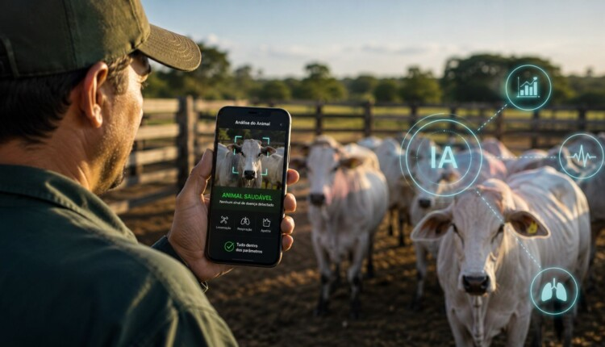

01 / MONITORAMENTO↗

Diagnóstico precoce por IA
A proposta utiliza sensores, câmeras e algoritmos de inteligência artificial para acompanhar padrões de comportamento e indicadores físicos ao longo do dia. Mudanças na atividade, postura, respiração ou consumo de leite podem ser comparadas ao padrão habitual do animal e sinalizadas para verificação. Os alertas servem como apoio à observação e à avaliação clínica; não constituem, por si só, um diagnóstico.
Ver como funciona →